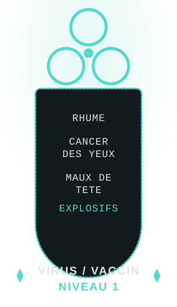
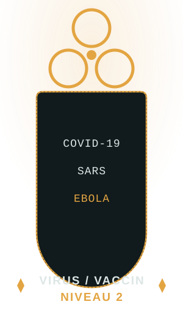

RSL
Mise à jour des procédures de RSL 2 et 3.
Division spécialisée en gestion des risques et menaces NRBC. Surveillance, confinement et intervention sur toute contamination biologique, radiologique, nucléaire ou chimique au sein du complexe.
Mise à jour des procédures de RSL 2 et 3.
Mise à jour des documents : modèle de rapport, PINS et liste des pathogènes.
Ajout des prérequis pour les passages d'échelons.
Refonte du document de la liste des pathogènes et du document Modèle de Rapport.
Refonte du document NRBC complète.
Présentation
Les quatre domaines de risque couverts par la division NRBC.
Le nucléaire, dans le cadre NRBC, désigne les risques liés aux armes nucléaires, aux installations nucléaires et à la dispersion de matières radioactives. Ces situations peuvent provoquer de fortes irradiations, des blessures graves et une contamination durable de l'environnement. Les effets sur la santé peuvent apparaître immédiatement ou sur le long terme. La NRBC vise donc à prévenir ces risques et à limiter les dangers liés aux substances radioactives.
Le radiologique, dans le cadre NRBC, désigne les risques liés à la dispersion de matières radioactives sans explosion nucléaire. Cette contamination peut provenir d'accidents ou de rejets de substances radioactives, affectant l'air, le sol ou les personnes. Les effets peuvent être invisibles au départ mais entraîner des conséquences graves sur la santé à long terme. Le domaine NRBC vise ainsi à détecter ces contaminations et à protéger l'environnement ainsi que les populations face aux substances radioactives.
La biologie, dans le cadre NRBC, concerne les risques liés aux micro-organismes pathogènes comme les bactéries, les virus ou les toxines, pouvant affecter la santé humaine, animale ou végétale. Ces agents peuvent provoquer des épidémies parfois difficiles à détecter au départ et se propager rapidement. Le domaine NRBC vise donc à surveiller ces menaces biologiques et à protéger face aux maladies et agents pathogènes.
La chimie, dans le cadre NRBC, désigne les risques liés aux substances toxiques capables de blesser, tuer ou contaminer des personnes et l'environnement. Ces agents peuvent être des gaz de guerre, des produits industriels dangereux ou d'autres composés chimiques nocifs. Ils peuvent agir rapidement par inhalation, contact ou ingestion. Le domaine NRBC vise donc à prévenir ces menaces et à protéger face aux substances chimiques dangereuses.
Hiérarchie
Hiérarchie et effectif de la spécialisation NRBC.

Échelon 6

Échelon 5

Échelon 4

Échelon 3
⚠ Un test est requis pour accéder à l'échelon supérieur

Échelon 2

Échelon 1 · Entrée
Habilitations
Actions autorisées par grade.
| Grade | Prise de sang | Création virus Niveau 1 | Création virus Niveau 2 | Test virus | Création de boost |
|---|---|---|---|---|---|
| Chef de Laboratoire | OUI | OUI | OUI | OUI | OUI |
| Spécialiste Avancé | OUI | OUI | OUI | OUI | OUI |
| Spécialiste | OUI | OUI | SUR DEMANDE | OUI | OUI |
| Analyste Expérimenté | OUI | SUR DEMANDE | SUR DEMANDE | SUR DEMANDE | OUI |
| Analyste | OUI | SUR DEMANDE | NON | SUR DEMANDE | SUR DEMANDE |
| Novice de Laboratoire | SUR DEMANDE | NON | NON | NON | NON |
Classification
Exemples de pathogènes classés par niveau de création.


Vérifie que la feuille Google Sheets est bien partagée en lecture avec « tout utilisateur disposant du lien ».
Procédure
Protocoles de biosécurité (BSL) et de radiosécurité (RSL) applicables sur le terrain.
Niveaux BSL — Bactériologie / Biologie
BSL 1
Définition
Niveau le plus bas, lorsqu'un pathogène infecte plus de 5 personnes — un type de virus infectieux et dangereux. Peut être déployé à partir du grade de Novice de Laboratoire.
Condition d'activation
Procédures
BSL 2
Définition
Niveau présentant un pathogène en mutation et une vaste contamination. Le déploiement du BSL 2 intervient à partir de 5 à 10 personnes infectées ou d'une contamination durant plus de 15 min. Peut être déployé à partir du grade d'Analyste Expérimenté.
Condition d'activation
Procédures
Objectif — Respecter les procédures à la lettre pour éviter une activation de BSL 3
BSL 3
Définition
Niveau de danger absolu, à prendre grandement au sérieux. Le déploiement du BSL 3 fait suite au BSL 2 en cas de non-respect des procédures, d'un taux d'infectés de 10 à 30 personnes ou d'une contamination durant plus de 30 à 40 min. Peut être déployé à partir du grade de Spécialiste.
Condition d'activation
Procédures
BSL 4
Définition
Danger absolu ou abandon — le déploiement de ce BSL redonne la gérance de la contamination à la direction SCI ou aux Officiers Supérieurs (Commandant / Colonel). Fait suite à une incontrôlabilité du pathogène, à un taux impossible tel que 40 à 60 personnes, ou à une contamination durant plus de 1 h 20. Peut être déployé à partir du grade de Spécialiste Avancé, avec accord du Gérant NRBC et des Officiers en chef des opérations AIT.
Condition d'activation
Exemples d'agents
SCP-[ACCRED-4]
Procédures
Niveaux RSL — Nucléaire / Radiologie
RSL 1
Définition
Le niveau le plus bas des 3 RSL, déployé lorsqu'un objet nucléaire ou une contamination radiologique est présent dans une zone. Peut être déployé au grade de Novice de Laboratoire.
Condition d'activation
Procédures
RSL 2
Définition
Niveau moyen, déployé lorsqu'un objet nucléaire à effet dangereux ou une contamination radiologique à grande échelle est présent dans un secteur. Peut être déployé à partir du grade d'Analyste.
Condition d'activation
Procédures
Objectif — Respecter les procédures à la lettre pour éviter une activation de RSL 3
RSL 3
Définition
Le niveau le plus haut, présentant une grande menace : l'exposition à la contamination radiologique est trop dangereuse et incontrôlable, ou un objet nucléaire est extrêmement instable. Peut être déployé à partir du grade de Spécialiste.
Condition d'activation
Procédures
Règlement
Conduite, sécurité et encadrement des activités GenLab de la division NRBC.
1.1Le sérieux, la rigueur et le professionnalisme sont exigés de tout membre NRBC en toutes circonstances.
1.2Tout manque de respect envers l'interbranche (dénigrement, insulte, etc.) est strictement interdit : cela va à l'encontre du partenariat NRBC respectif. De lourdes sanctions seront appliquées.
1.3Dans n'importe quelle situation, toute menace de type pathogène, agent chimique ou objet nucléaire (même une mini menace) doit être prise au sérieux complet.
2.1Tout ordre donné par un supérieur hiérarchique (gérance, direction SCI, coordinateurs NRBC) doit être exécuté sans délai, sauf en cas de danger manifeste non justifié.
2.2Les unités AIT restent prioritaires en matière d'ordre de sécurité. Les Agents d'Intervention Tactique doivent vous guider et éviter les menaces le plus possible. Toute contestation de procédure d'évacuation d'un AIT ou autre fera l'objet d'une sanction disciplinaire.
3.1Les FIM (Forces d'Intervention Mobile) et les AIT (Agents d'Intervention Tactique) restent prioritaires en matière de sécurité. Un membre NRBC peut être sollicité, mais n'a pas à gérer seul une situation sécuritaire sans leur approbation.
3.2Les protocoles de sécurité tels que BSL/RSL doivent être appliqués et respectés à la lettre. Tout manquement suivra une sanction disciplinaire EZ pour « Mise en danger d'autrui ».
3.3Tous les membres doivent suivre les protocoles de sécurité à la lettre pour toute manipulation d'agent.
4.1Une inactivité NRBC supérieure à 14 jours (rapports, formation) pourra entraîner rétrogradation ou retrait temporaire de la spécialisation.
4.2Si vous n'effectuez pas votre quota de la semaine interne à la NRBC, vous recevrez un avertissement d'activité.
5.1La priorité est donnée à la prévention des risques par substitution, confinement ou limitation des expositions. Aucun travail NRBC ne peut être réalisé sans autorisation préalable de la Gérance NRBC.
5.2Il est strictement interdit d'activer un BSL/RSL de niveau plus haut que le vôtre sans autorisation d'un membre de la Gérance NRBC ou de la Direction. Un Superviseur n'a pas le droit de vous autoriser. En l'absence des deux, faites une demande sur la radio D.
5.3Il est interdit d'intervenir dans le confinement d'un SCP biologique seul et sans l'autorisation minimum d'un Co-Gérant NRBC ou d'un membre de la Supervision.
6.1Tout incident, accident, exposition ou perte de confinement doit être signalé immédiatement à la Gérance et consigné dans le registre des événements NRBC. Une enquête interne est ensuite réalisée pour identifier les causes et prévenir toute récidive.
6.2Tout accident ou incident, même minime, doit être signalé à la Gérance dans les plus brefs délais.
7.1Il est interdit de classer ou créer des agents fictifs ou inexistants.
7.2Il est interdit de saisir des informations volontairement incohérentes ou erronées.
7.3Il est interdit de détourner le système de son usage initial.
7.4[Règle SCI] Si vous ne faites pas partie de la spécialisation NRBC et que vous ajoutez des agents, vous serez sanctionné.
7.5Tout nouvel agent doit être classé. Si un agent n'est pas classé, de lourdes sanctions tomberont.
EPI Alpha — BioChimie
Tout personnel intervenant en zone NRBC doit porter :
Contrôle et entretien obligatoires des EPI à chaque utilisation.
EPI Bêta — NucléRadio
Tout personnel intervenant en zone de danger NucléRadio doit porter :
Contrôle et entretien obligatoires des EPI à chaque utilisation.
2.1Toute fuite, diffusion non autorisée ou consultation illégitime d'un document fera l'objet de sanctions disciplinaires lourdes, pouvant aller jusqu'à l'exclusion de la Fondation.
2.2Aucun agent pathogène, chimique ou radioactif anormal ne doit être révélé.
3.1En cas d'expérimentation présentant des risques moraux, physiques ou mentaux pour un sujet, le recours à l'amnésie (type C-D) est obligatoire.
3.2Les agents et substances biochimiques doivent être manipulés sous hotte (protection des substances biochimiques pour l'opérateur), enceinte de sécurité ou boîte à gants selon les procédures, stockés dans des locaux sécurisés, ventilés et verrouillés.
3.3L'accès aux zones NRBC est strictement limité aux personnes autorisées. Avant toute sortie de zone NRBC : les personnels passent par une procédure de décontamination, les surfaces, outils et équipements sont désinfectés selon les protocoles internes. Pour toute cessation d'activité NRBC (fin de projet, fermeture de labo), un rapport doit être réalisé.
3.4L'utilisation du bandeau de sécurité n'est requise qu'en cas d'événement anormal ou sur une zone biologique. L'utilisation du ruban pour vos expériences ou autre usage hors sujet de la NRBC est interdite — des sanctions seront appliquées si cette règle n'est pas respectée.
4.1La white-list NRBC (accès à l'équipement, aux procédures et aux zones spécialisées) peut être suspendue ou retirée à tout moment par la Gérance en cas de mauvaise utilisation, négligence ou manquement à l'éthique.
BSL
L'activation des BSL doit respecter le grade minimum requis selon le niveau concerné :
Toute activation de BSL doit être justifiée par une raison valable. Toute activation effectuée sans respecter les prérequis définis sera passible de sanctions. L'activation d'un BSL doit être effectuée via la commande /site en incluant obligatoirement le niveau du BSL et les procédures de sécurité associées dans le message. Exemple :
RSL
L'activation des RSL doit respecter le grade minimum requis selon le niveau concerné :
Pour une activation de RSL, elle doit être justifiée auprès de l'interbranche au moment des faits. Pour toute activation, il est obligatoire de faire un /site en précisant le niveau et les procédures à suivre. Exemple :
En cas de non-respect des procédures par du personnel, il est obligatoire de collecter des preuves et de les transmettre à la Direction ou à la Gérance NRBC. Le non-respect des procédures de sécurité ou des règles d'activation entraînera des sanctions disciplinaires sévères.
6.1Toute analyse doit être effectuée soit dans un laboratoire déjà existant, soit dans un laboratoire nouvellement créé conformément au présent règlement.
6.2Un laboratoire est considéré comme valide uniquement s'il respecte les conditions suivantes : présence de murs complets, présence d'un toit. Le laboratoire doit être soit directement relié au sol (murs touchant le sol), soit équipé d'un sol complet.
6.3L'entrée du laboratoire doit obligatoirement être équipée d'un portail de décontamination NRBC (optionnel : sas de décontamination). Ce dispositif est requis pour éviter toute contamination extérieure, contrôler les entrées et sorties, et assurer la sécurité du personnel.
6.4Chaque laboratoire doit contenir au minimum une poubelle à déchets biologiques / médicaux (type DASRI), identifiable par sa couleur jaune. Cette poubelle est destinée aux déchets contaminés, au matériel biologique et aux résidus expérimentaux dangereux.
6.5Toute manipulation NRBC est strictement interdite en dehors d'un laboratoire conforme. Aucun test, analyse ou expérimentation ne doit être réalisé en zone ouverte ou dans un espace non sécurisé.
6.6Types de laboratoires autorisés — Laboratoire standard : structure complète, utilisé pour des recherches longues ou complexes, niveau de sécurité maximal recommandé. Laboratoire de crise (ou laboratoire miniature) : structure réduite, déployé rapidement en situation d'urgence, doit respecter toutes les règles de confinement, même en format compact.
En raison de la longueur du règlement ainsi que de l'ajout d'images d'exemple, celui-ci est mis à disposition sous la forme d'un document Google Docs.
Consulter le document — Protocole Code Vert1.1Toute création doit être demandée et validée par les Gérants NRBC.
1.2Vous n'avez pas le droit de prendre du sang sans autorisation.
1.3Par la suite, un rapport doit être effectué à la fin.
2.1Si un Code Vert est déclenché lors d'une expérience, vous aurez de lourdes sanctions.
2.2Lorsque vous manipulez des objets en lien avec GenLab, vous devez avoir un équipement EPI Type Alpha obligatoire.
3.1Toute création doit se faire dans un laboratoire NRBC.
Matériel
Équipement préliminaire par domaine de spécialisation.
Protège contre les radiations ionisantes.
Filtres pour retenir les particules radioactives.
Surveille les manipulations de substances nucléaires.
Mesure la masse de matériaux radioactifs en toute sécurité.
Permet de manipuler les isotopes radioactifs sans contamination.
Protège le personnel des rayonnements et de la contamination.
Détecte et mesure la radioactivité (ionisation des gaz).
Mesure la dose de rayonnement reçue par une personne sur une période donnée.
Mesure l'intensité des rayonnements ionisants.
Analyse le spectre gamma pour identifier les isotopes radioactifs.
Permet de manipuler des substances radioactives en toute sécurité, à distance.
Bras mécanique permettant de manipuler des objets radioactifs à distance.
Pour observer des cellules, micro-organismes et structures biologiques.
Petites boîtes circulaires pour cultiver des micro-organismes.
Stérilise le matériel et les cultures grâce à la vapeur sous pression.
Fournit un environnement stérile pour manipuler les cultures cellulaires.
Permet de mesurer et transférer de petites quantités de liquide avec précision.
Maintient les cultures à une température et un environnement contrôlés.
Récipient cylindrique pour mélanger, chauffer ou contenir des liquides.
Flacon conique pour mélanger sans éclabousser.
Tube pour mesurer des volumes précis de liquides.
Tube gradué avec robinet pour titrages précis.
Mesure avec précision la masse des substances.
Aspirateur de fumées et gaz toxiques pour manipulations chimiques.
Répertoire Administratif
Accès rapide aux documents, protocoles et registres administratifs de la division NRBC.